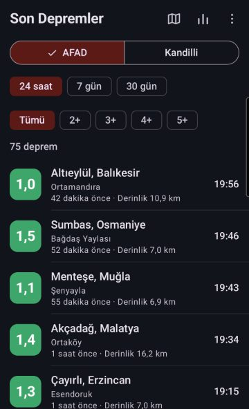
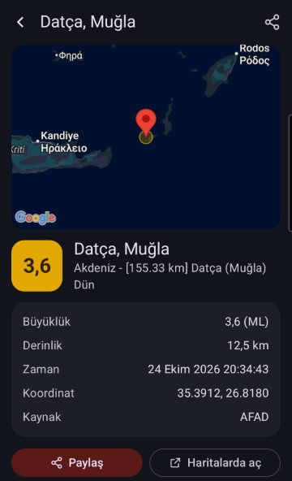
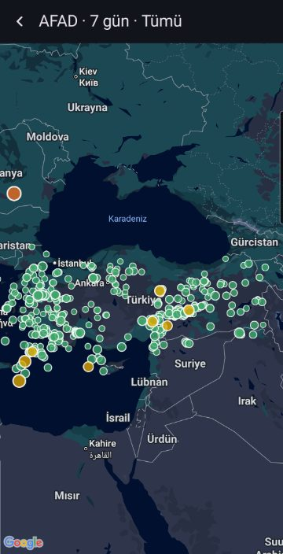
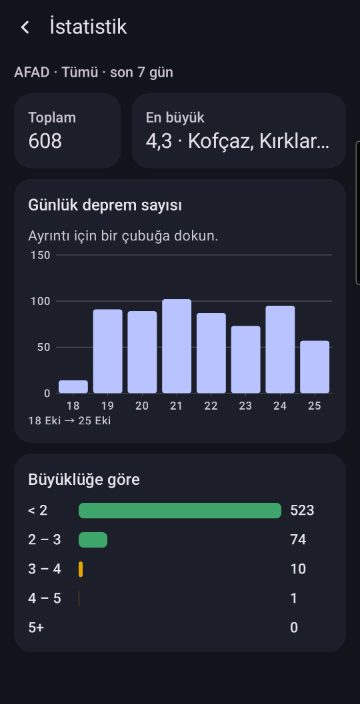
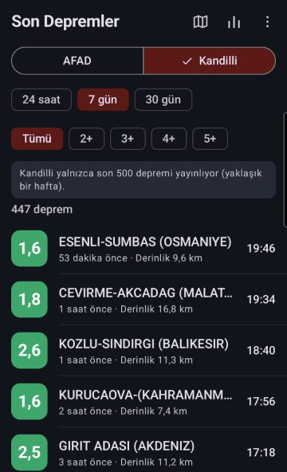
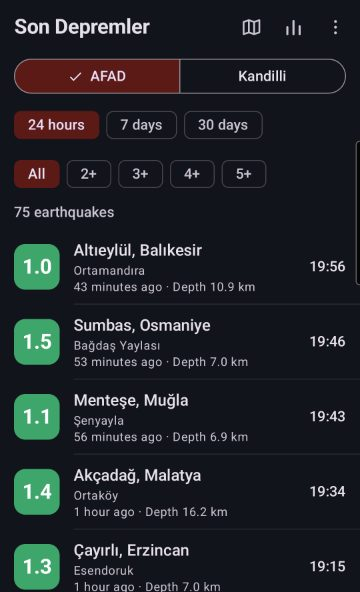
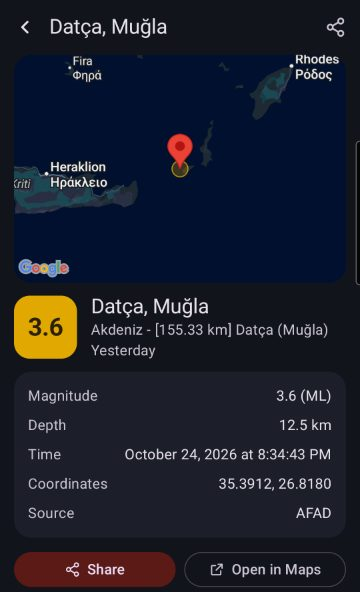
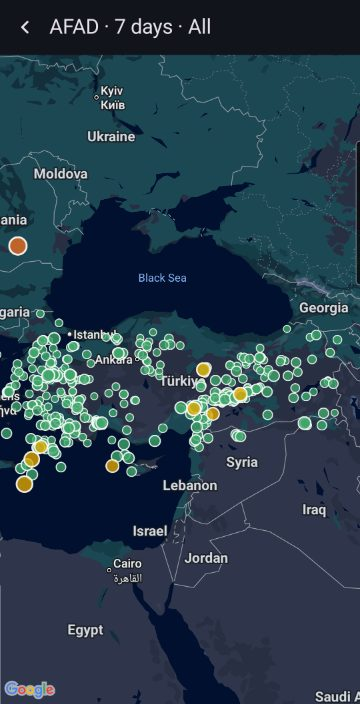

Son DepremlerSon Depremler
AFAD ve Kandilli'den Türkiye'deki son depremler: liste, harita ve istatistik.Recent earthquakes in Turkey from AFAD and Kandilli: list, map and statistics.
Türkiye ve çevresinde son 24 saatte, 7 günde ya da 30 günde olan depremleri tek ekranda görün. Son Depremler, verileri doğrudan AFAD Deprem Dairesi ve Kandilli Rasathanesi'nin herkese açık servislerinden alır. Kaynağı tek dokunuşla değiştirebilir, iki kurumun ölçümlerini karşılaştırabilirsiniz.See the earthquakes of the last 24 hours, 7 days or 30 days in and around Turkey on one screen. Son Depremler ("Recent Earthquakes") takes its data directly from the public services of AFAD (Turkey's Disaster and Emergency Management Authority) and Kandilli Observatory. Switch the source with one tap and compare both institutes' measurements.


Ekran görüntüleriScreenshots








ÖzelliklerFeatures
AFAD ve Kandilli: iki kaynak, tek dokunuşla geçişAFAD and Kandilli: two sources, one tap to switch
İl, ilçe ve mahalle bilgisi (AFAD)Province, district and neighbourhood (AFAD)
Zaman filtresi: 24 saat, 7 gün, 30 günTime filter: 24 hours, 7 days, 30 days
Büyüklük filtresi: tümü, 2+, 3+, 4+, 5+Magnitude filter: all, 2+, 3+, 4+, 5+
Büyüklüğe göre renkli işaretler: küçükler yeşil, 3+ sarı, 4+ turuncu, 5+ kırmızıColour-coded by magnitude: small ones green, 3+ yellow, 4+ orange, 5+ red
Deprem detayı: harita, büyüklük, derinlik, saat, koordinatEarthquake details: map, magnitude, depth, time, coordinates
Genel harita: bütün depremler, büyüklüğüne göre boyutlanan renkli noktalarlaOverview map: every earthquake as a dot sized by magnitude
İstatistik: saatlik/günlük deprem sayısı ve büyüklük dağılımıStatistics: earthquakes per hour/day and by magnitude
Depremi paylaşma ve Haritalar uygulamasında açmaShare and Open in Maps
Açık ve koyu tema, Türkçe ve İngilizceLight and dark theme, Turkish and English
Yenilenen 3.0 sürümü sıfırdan yazıldı: AFAD'ın yeni veri servisine geçildi, Kandilli listesi her zaman en güncel kaynaktan alınıyor. Uygulama konum izni istemez ve hesap gerektirmez. ÖNEMLİ: Son Depremler bir erken uyarı sistemi değildir. Veriler kurumlara depremden dakikalar sonra ulaşır ve sonradan güncellenebilir. Resmî bilgi ve uyarılar için AFAD'ı takip edin. Veriler: AFAD (deprem.afad.gov.tr) ve Boğaziçi Üniversitesi Kandilli Rasathanesi ve Deprem Araştırma Enstitüsü (koeri.boun.edu.tr). Uygulama bu kurumlarla bağlantılı değildir.Version 3.0 is rebuilt from scratch: it uses AFAD's new data service and always reads the latest Kandilli list. The app needs no location permission and no account. IMPORTANT: Son Depremler is not an early warning system. Data reach the institutes minutes after an earthquake and may be revised. Follow AFAD for official information and alerts. Data: AFAD (deprem.afad.gov.tr) and Boğaziçi University Kandilli Observatory and Earthquake Research Institute (koeri.boun.edu.tr). The app is not affiliated with these institutions.